JAN – AUG 2026
Apple
It has been such a life-changing experience working on upcoming products with the Watch team! Though the details are confidential, my role has included much mechanical design, CAD using NX, rapid prototyping, collaboration with vendors, testing samples for material properties, DFM reviews, developing experiments, public speaking, and technical communication and documentation.
Please enjoy comics tracking my experience until I fully update!
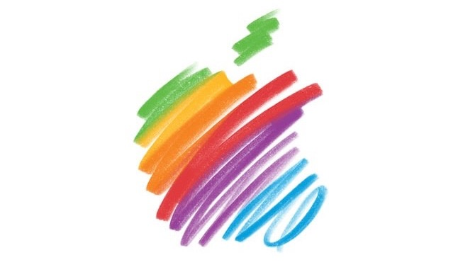
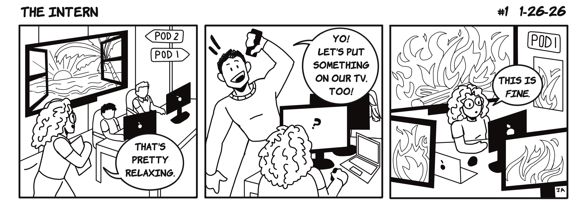
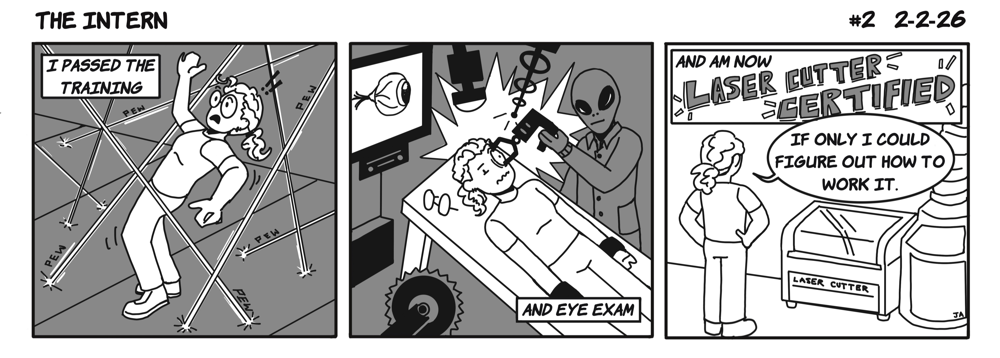
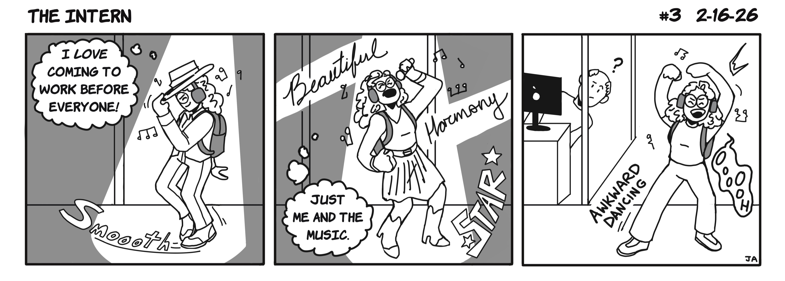
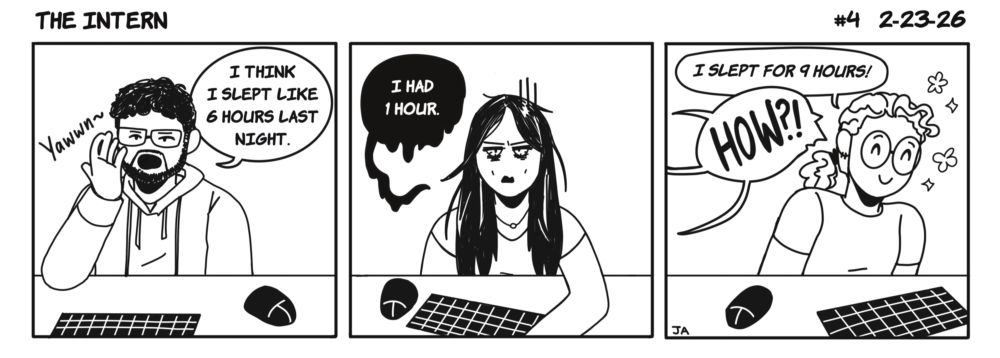
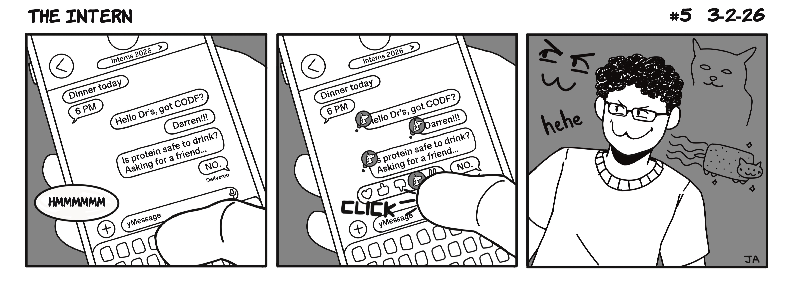
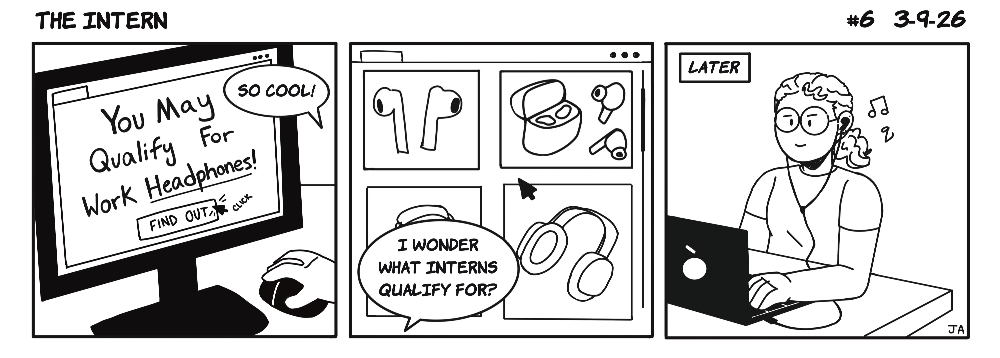
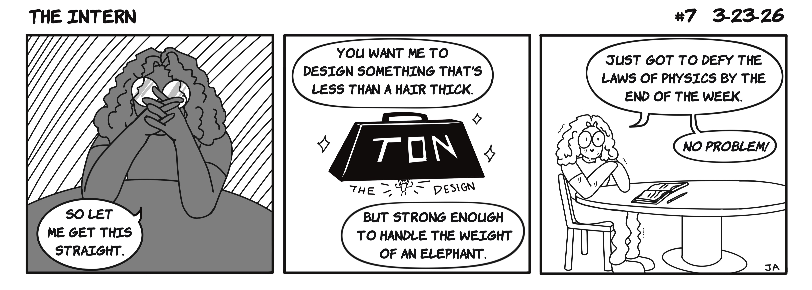
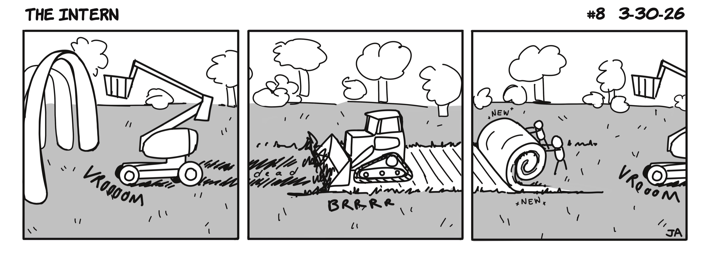
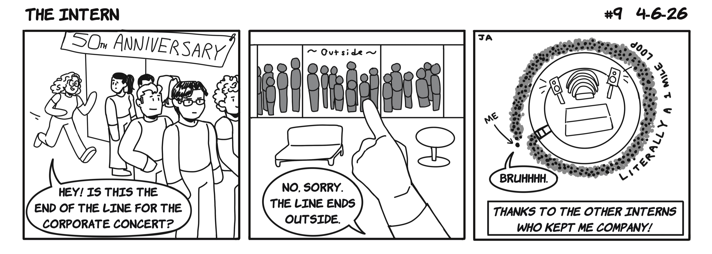
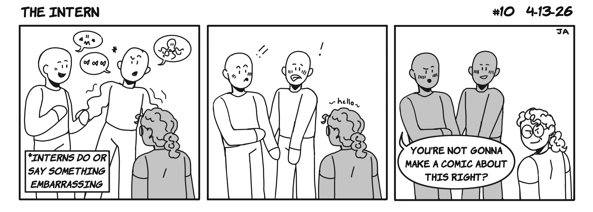
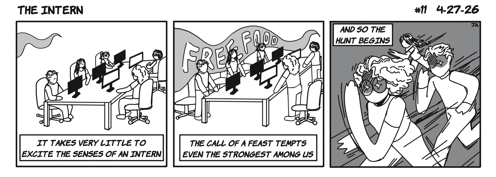
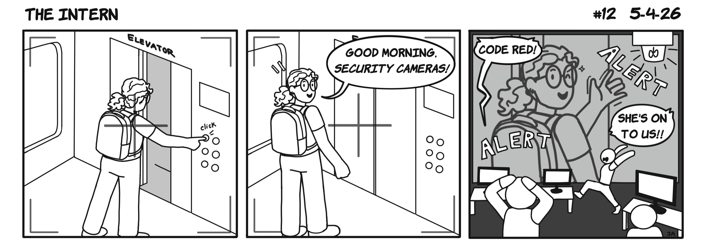
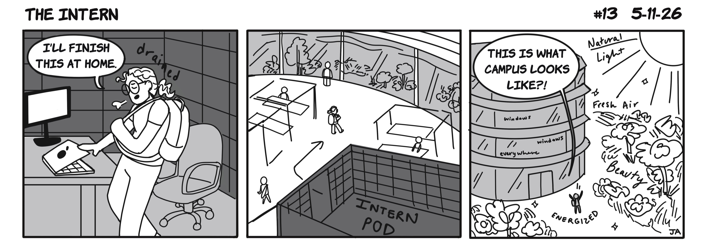
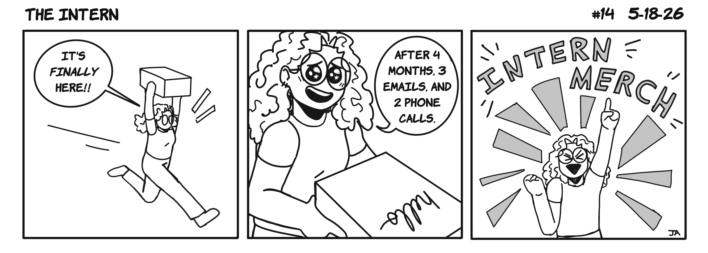